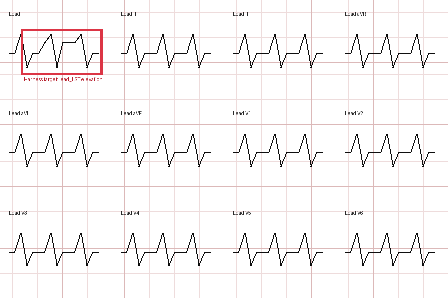

Physician final call
The agent supports review. It does not replace clinical judgment.
A Windows desktop agent that captures a configured viewer ROI, asks OpenClaw to inspect bounded screenshots, and returns coordinate-audited overlays for physician review.

Every stage preserves the physician-facing image and an inspectable contract.
User-defined PHI margins are applied before any image leaves the viewer.
physical ROI
Bounded screenshots travel through the stable public Gateway protocol.
public Gateway
Candidate regions receive bounded detail passes, then exact geometry is reconciled.
normalized_original_roi
Findings project back to the source display; the physician keeps the final call.
human review
Engineering evidence from the packaged GUI—not a synthetic or headless substitute.
The run used subscription-backed openai-chatgpt-responses through
an OpenClaw-owned agent loop. App capture exclusion remained enabled; public
media on this page uses only the repository's synthetic ECG fixture.
Visible limitations are part of the product, not hidden in a disclaimer.
The agent supports review. It does not replace clinical judgment.
Capture stays inside user-defined viewer margins before remote analysis.
Invalid schema, receipts, coordinates, or image evidence remain visibly incomplete.
Current reports separate harness integrity from medical performance.
The subscription path never requires a Platform API key in project files.
Use a tagged portable bundle, or build the frozen Windows directory.
scripts\build-exe.bat
Launch once, select the viewer, and draw the PHI-safe capture bounds.
start.bat
Sign in locally, then choose OpenAI Subscription via OpenClaw.
codex login
Check the portable runtime without opening the GUI or calling a model.
DICOMOverlayAgent.exe --selfcheck
Release downloads require repository access while the source repository is private.